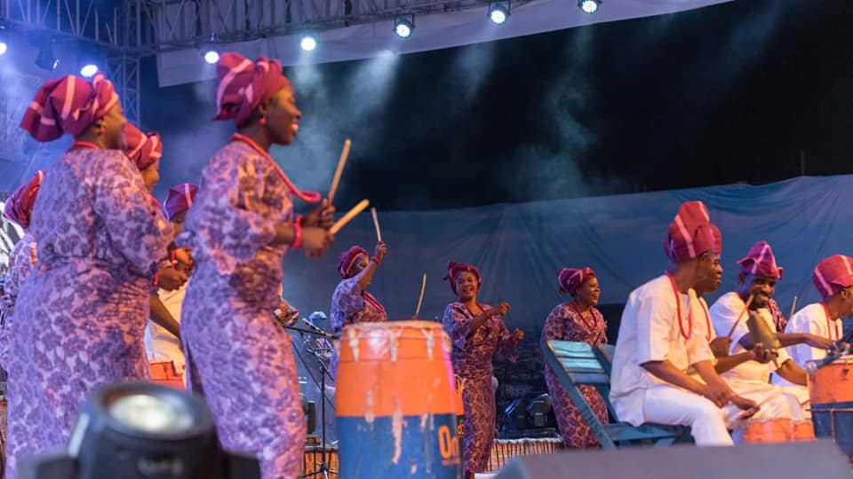
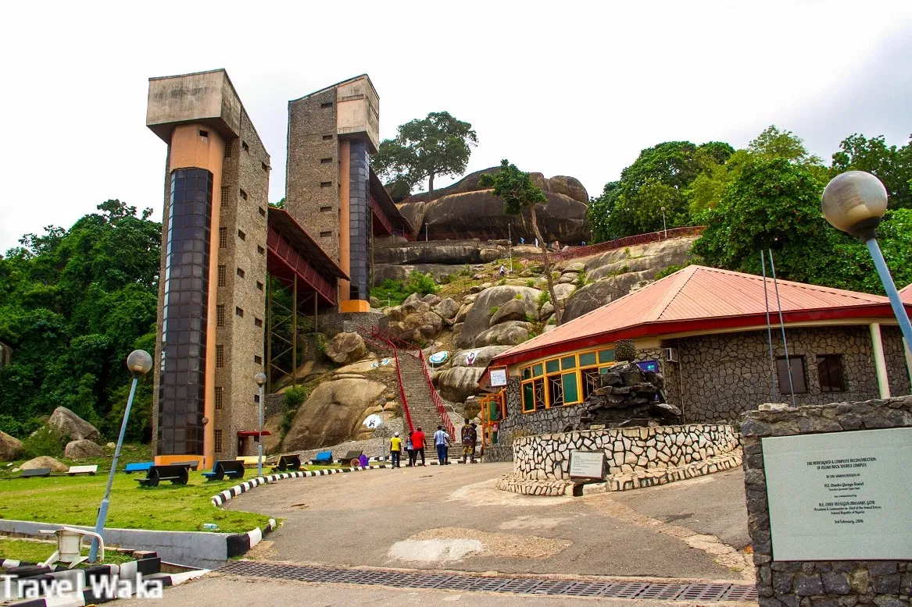

1. Lisabi Festival
The Lisabi festival commemorates the celebration of the Egba hero
called Lisabi. The Lisabi Festival, held in high esteem by the Egba
people, reminds them of how they conquered their enemies in their
torrid past and the individuals that played roles in liberating the
people, especially Lisabi Agbongbo-Akala. He was the hero of
inter-tribal wars around the 1930s and he gallantly fought to defend
the people against slavery and oppression. The Lisabi festival is
celebrated to recognize and appreciate his fearlessness and
gallantry. History has revealed that Lisabi, the great Egba hero,
did not die but intentionally vanished into the earth in a forest
between Maroko and Abatan villages in Obafemi Owode Local Government
Area; the place is known as ‘Igbo Lisabi’ (Lisabi forest). The
forest is bounded in the west of the Ogun River and the south of the
Tegbelu stream. -Advertisement- Lisabi festival is an annual event
held in March amidst pomp and pageantry. The festival attracts
visitors and tourists from far and near.

2. Africa Drums Festival
The African Drums Festival is an annual festival that takes place at
the June 12 Cultural Center in Kuto, Abeokuta, the capital of Ogun
State every year in the month of April. The maiden edition took
place April 16, 2016. The festival lasts for 3 - 4 days and
showcases various African Drums (including the tallest drum in
Nigeria - 16 feet), drummers, dance troupes and singers. The opening
ceremony of the maiden edition of the festival which lasted for four
days, featured performances from Ara, the world renowned female
talking drummer, late Hubert Ogunde Memorial Theatre Troupe, Ogun
State Troupe, as well as other groups. I also had in attendance
Ambassadors and High Commissioners from Benin, Ghana, Kenya,
Senegal, South Africa, Togo, and Jamaica, among others. The second
edition had representatives of the Mayor of the city of Dallas, USA,
Regina Hill, Lady Bernard Suarres from Cuba among other dignataries
from Nigeria. The three-day event witnessed performances from over
50 cultural troupes, including troupes from five African countries
as well as Cuba, Haiti and the United States of America (USA).
Cultural troupes that performed include Ekemini Cultural Troupe from
Akwa Ibom State, Association of Kano State Troupes, Hubert Ogunde
Cultural Troupe from Ogun State, Duro Ladipo Troupe, Shehu Troupe,
Niger State, Oyo State Cultural Troupe and Ensemble Drums, Maliki
Troupe of Borno State, Dawa Troupe from Plateau State, as well as
troupes from Bayelsa, Osun, Katsina, Ondo, Edo, Lagos, Imo and Benue
States. The foreign troupes were, the Association of intersection
Haiti, Association Toffondji of Togo, Leydis Bernal Suarez of Cuba,
Faso Djarabi of Burkina Faso, La Campagnie N’tsamini, Afro Media,
USA, Gwari troupe, Ghana, Nikki Spooner from the city of Dallas,
USA.

3. Olumo Festival
Olumo Rock in Abeokuta occupies a significant historical aspect in
the life of the Egba people, particularly for serving as a
formidable fortress during the days of Yoruba internecine wars. The
rock, a gigantic outcrop of granite formation, was what gave them an
edge over their adversaries as it served both as 'observation post'
with vantage target range and impregnable 'bunker' for Egba
warriors. Thus till today, whenever the annual Lisabi Day is held, a
visit to this rock is a must by the Egba people led by their monarch
and other high chiefs such as Oluwo, Apena among others.
Lisabi was an Egba General reputed and respected for his military
deftness and battlefield bravado. The visit to the rock top is in
fact the climax of the weeklong celebration. Atop the rock, the
nostalgia of the war period is usually invoked with the joyful
rendition of the ancient Egba national anthem, which in many ways
shows the evergreen significance of the rock to the people. The
closing stanza of the anthem goes thus: "Mayo Mayo Mayo O Lori
Olumo, Mayo Mayo Mayo O Lori Olumo...", which means "I will ever
be happy atop of Olumo." Libations would then be offered and
prayers for peace and progress of Egba sons and daughters, Ogun
State, Yoruba race and Nigeria as a whole would be said. After
this, the royal father and his chiefs would depart, perhaps, to
the palace or their different abodes.
